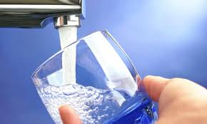

Tap Water Recipe

Description
My absolute favorite low calorie, low sugar beverage made simpler than
you ever imagined. Minimal prep time. Maximal refreshment.
Ingredients
- 1 cup of water (approximately)
- 1 tsp of water
Steps
- Get a glass out of the cupboard and place it under the tap.
- Turn the water on.
- Fill the glass with water almost to the top. Like most of my
recipes, don't worry if you put too much in the glass. You can
just dump it on the floor and repeat this step.
- Turn the tap off. This is INCREDIBLY important. This first time
I attempted this recipe, I ran up a $1,500 water bill.
- Add additional water to taste by the teaspoon.
- Use a vaccum cleaner to suck up any spillage.
- Drink up!